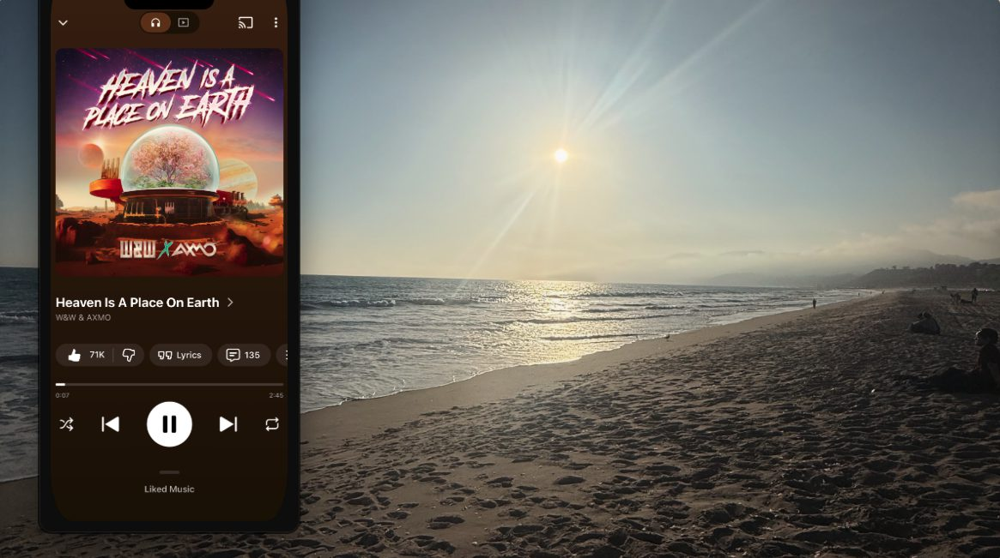

Frontback died in 2015. The idea it was reaching for didn't.
The app was simple. Take a photo with your front camera. Take one with your back camera. Combine them. What you were looking at, and what you looked like while looking at it — one image, two realities. It felt honest in a way neither photo alone could be.
The front camera became a studio. Instagram happened. The back camera got better at making the world look perfect. Both directions optimized toward performance.
Something else happened too. The screen became the dominant surface. Most of what we look at now isn't the physical world — it's a rectangle. Maps, messages, faces, feeds. The screen is where we actually are. The front camera captures your face; the back camera captures the room. Neither captures what you were doing.
Screengram is what Frontback would be if it were made today. A screenshot of whatever was on your screen, paired with a photo of wherever you were. What you were looking at, and where you were while you looked at it.

The resulting image is strange in the right way. It's more honest than either would be alone.